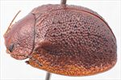
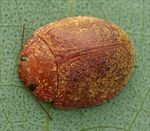
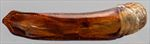
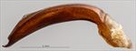
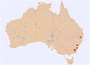

Click on images to enlarge


Male, Blackheath, New South Wales


Female, Nerriga, New South Wales


Aedeagus, dorsal view (Blackheath, New South Wales)


Aedeagus, lateral view (Blackheath, New South Wales)


Distribution
Name
Trachymela sp. Ta168
Reference specimen
2001-232, Blackheath, Blue Mountains, New South Wales.
Adult Description
Length: ♂ 8.2–8.4 mm (n=6), ♀ 8.0–9.2 mm (n=7).
Colouration:
- Head: Uniformly light- to mid-brown, mandibles with black tips; antennomeres 1–3 straw-brown, 4–6 grading towards darker brown, segments 7–11 dark brown with proximal extreme usually slightly paler.
- Pronotum: Uniformly brown, concolorous with head.
- Scutellum: Brown, concolorous with pronotum, sometimes broadly bordered in a fractionally darker shade.
- Elytra: Brown, concolorous with pronotum, with a scatter of small, dark-brown verrucae distributed very evenly over much of disc (density of these in antero-median depression is usually slightly lower), most verrucae placed within longitudinal rows; punctures slightly darker brown; humeral callus concolorous with surrounds.
- Venter & Legs: Mid-brown, with edges of ventrites sometimes slightly darker, legs similar in shade, inside surface of elytral epipleura brown.
- Cuticular Wax: Light brown in colour and evenly and sparsely distributed over dorsal surface.
Morphology:
- Shape: Evenly rounded, greatest height just in front of centre of elytra, often (especially males) noticeably explanate.
- Head: Punctures moderately sized (pd ≈ 2–2.5 × ef) and quite evenly and densely distributed, a small unpunctured space sometimes present at rear of head between eyes. Antennae moderately long (AL/BL: ♂ 42–43%, ♀ 34–38%), filiform.
- Pronotum: Almost evenly curved transversely over disc with lateral margins noticeably explanate, foveal depression shallow but well-developed, central elevation absent; puncturation clearly and deeply impressed and noticeably coarser than that on head, punctures relatively evenly distributed and moderately dense in discal area (spacing = 1.5–2 pd) interspersed with a few small, slightly elevated and more sparsely punctured areas, interstices sometimes quite elevated producing a rough surface, punctures becoming much coarser towards lateral margins. Front margins join lateral margins in a smoothly rounded right-angle, with lateral margin initially roughly straight for about half of length, sometimes slightly undulate, before curving smoothly and gradually towards rear margin.
- Scutellum: Unpunctured, flat rough-surfaced lateral borders contrast with domed and smooth central region.
- Elytra: Surface evenly curved with a very shallow antero-median depression, punctures distinct and relatively evenly distributed except close to apex, with much smaller punctures scattered sparsely on interstices; interstices form a prominent network of elevated ridges around punctures; small round but quite prominent and evenly spaced verrucae present over most of disc and arranged within longitudinal rows, surface discontinuous under humeral callus. Vertical extension of epipleura large (HCE/PW = 0.39–0.42).
- Venter: Prosternal process parallel-sided for a distance before widening, lightly closed anteriorly; short setae present sparsely over prosternal process and mesoventrite; a single seta on anterior and median trochanter; front edge of metaventrite beveled, truncate.
Male Genitalia (Aedeagus):
- Dimensions: Moderately long (LPE/BL = 31–33%).
- Dorsal view: Shaft narrowing slightly and briefly from base then almost parallel-sided for much of length, sides slightly undulate around ostium with widest point at base of spatula, from where sides converge rapidly towards apex in a slightly convex arc; dorsal surface smoothly curved with a relatively long dorso-median channel, dorsolateral channels long to produce very long dorsal ostial processes; tip protruding moderately, ostial opening large.
- Lateral view: Shaft almost evenly and very gently curved throughout its length, thinning towards apex only over final 10% of length, tip prominent and deflexed.
Immature Stages
Unknown.
Similar species
- Ta42: Very similar in general appearance, but easily distinguished by its possession of a posterior trochanter spur.
- Ta02: Superficially similar, but the distribution of verrucae on its elytra is much less regular, it has a black humeral callus, and the ventral surface of the head is at least partially black.
Notes
- Host Associations: Recorded from unspecified smooth-barked Eucalyptus species, as well as a single record from the northern tablelands of New South Wales from the peppermint E. acaciiformis.
Copyright © 2026. All rights reserved.